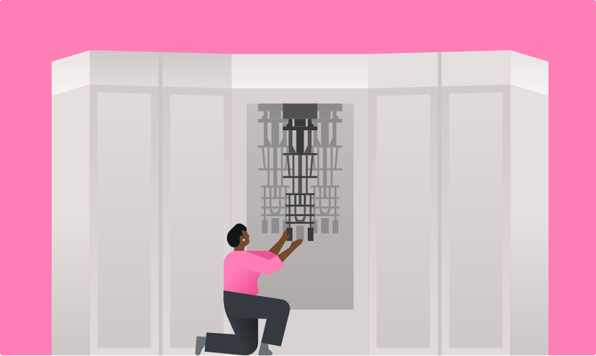
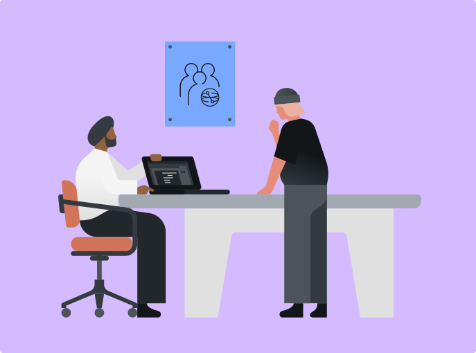
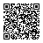

Salud
Expedientes con décadas de vigencia permiten extorsión, fraude o discriminación.
De los qubits a una estrategia de migración —y a un procesador cuántico real.

¿Y si ya
lo copiaron?
Un atacante no necesita descifrar hoy. Puede capturar hoy y esperar a tener la capacidad mañana.
Primero, la intuición
Clásico
Un bit tiene un valor definido al leerlo.
Cuántico
Un qubit es un estado; al medir obtenemos un resultado clásico con probabilidades.
Un qubit en superposición combina las posibilidades de 0 y 1. Al medirlo, obtenemos solo uno de esos resultados.
H|0⟩ = (|0⟩ + |1⟩)/√2
Una compuerta Hadamard prepara probabilidades 50/50 en la base computacional.
Cada shot produce solo 0 o 1; muchos shots revelan la distribución.
|Φ⁺⟩ = (|00⟩ + |11⟩)/√2
El sistema completo tiene una descripción precisa; cada qubit por separado no tiene un estado puro independiente.
00
11
Resultados correlacionados. No permite enviar información más rápido que la luz.
Criogenia, cableado de microondas, electrónica de control, QPU y cómputo clásico trabajando juntos.
Expresar el problema en circuitos y observables.
Transpilar a la ISA, conectividad y compuertas de la QPU.
Usar primitivas como Sampler o Estimator.
Interpretar distribuciones, ruido e incertidumbre.
Qiskit SDK construye y transforma. IBM Quantum Platform autentica, agenda y ejecuta en QPUs.
La deuda ya existe
Interceptar tráfico o robar archivos cifrados.
Conservar lo que mantenga valor: historiales, diseños, diplomacia.
Descifrar material protegido con criptografía pública vulnerable.
La variable urgente no es solo “cuándo llega la computadora”, sino cuánto tiempo debe vivir el secreto.
Expedientes con décadas de vigencia permiten extorsión, fraude o discriminación.
Diseños, fórmulas y estrategia pierden ventaja competitiva años después del robo.
Comunicaciones diplomáticas o de seguridad revelan fuentes, alianzas y decisiones.
Una clave secreta compartida
La misma clave cifra y descifra. Es rápida y protege el volumen principal de los datos.
Ejemplo: AES
Impacto cuántico: Grover reduce cuadráticamente la búsqueda de claves; usar claves más largas conserva margen de seguridad.
Un par: pública + privada
La pública se comparte; la privada se protege. Permite acordar claves, cifrar o firmar sin compartir antes un secreto.
Ejemplos: RSA · DH · DSA · ECC
Impacto cuántico: Shor rompe los supuestos de factorización y logaritmo discreto usados por estas familias.
Convertir factorización/log discreto en búsqueda de periodo.
Evaluar coherentemente una función periódica.
La QFT concentra amplitud en información del periodo.
Posprocesamiento clásico deriva factores o la clave.
El Bell state de dos qubits no escala mágicamente a romper RSA‑2048.
Práctica común: claves simétricas robustas (p. ej., AES‑256) y migración de RSA/ECC hacia PQC.
Defender sin una QPU
Nuevas matemáticas.
Las mismas computadoras.
Ataques conocidos de computadoras clásicas y cuánticas.
Acuerdo/encapsulación de claves y firmas vulnerables.
No requiere enlaces cuánticos ni hardware fotónico especial.
Encapsulación de claves basada en retículas modulares. Principal opción para establecer secretos.
Firma digital basada en retículas modulares. Principal estándar de firmas PQC.
Firma sin estado basada en hashes. Alternativa con supuestos matemáticos distintos.
ML‑DSA / SLH‑DSA autentica artefactos y mensajes.
ML‑KEM encapsula una clave compartida.
AES‑GCM o ChaCha20‑Poly1305 cifra el volumen.
Durante la transición, combinaciones híbridas clásica + PQC reducen el riesgo de depender de una sola familia.
PQC no es
buscar y reemplazar.
Convertir incertidumbre en decisiones
Políticas, interfaces y datos permiten sustituir algoritmos, parámetros, claves y proveedores con seguridad.
X + Y > Z
Equipo, alcance, riesgo aceptable y datos longevos.
Algoritmo, uso, ubicación, dueño, proveedor y fecha de retiro.
X + Y vs escenarios Z; exposición externa y criticidad.
TLS/VPN/PKI/código firmado en laboratorio; medir y documentar.
¿Qué dato
no puede
esperar?

28–29 OCT · GUADALAJARA + ONLINE
Dos días de charlas, talleres y laboratorios cuánticos para aprender, construir y conectar.
Abre la presentación, consulta las fuentes y descarga el notebook del estado de Bell.
brun3y.github.io/quantum-and-cybersecurity/

De la abstracción al hardware
|00⟩ → H → CX
→ (|00⟩+|11⟩)/√2
Esperamos ≈50% 00 y ≈50% 11.
El hardware real añade resultados espurios por ruido.
Enlace corto para copiarbrun3y.github.io/quantum-and-cybersecurity/bell
Archivo → Guardar una copia en Drive. Ejecuta las celdas en orden.
# Celda 1 · instalar
!pip install -q \
'qiskit[visualization]' \
qiskit-aer \
qiskit-ibm-runtime
# Si Colab lo pide:
# Entorno de ejecución → Reiniciar sesiónfrom google.colab import userdata
api_key = userdata.get("IBM_QUANTUM_API_KEY")from qiskit import QuantumCircuit
bell = QuantumCircuit(2)
bell.h(0) # superposición
bell.cx(0, 1) # entrelazamiento
bell.measure_all()
bell.draw("mpl")from qiskit_aer import AerSimulator
from qiskit import transpile
from qiskit.visualization import plot_histogram
sim = AerSimulator()
compiled = transpile(bell, sim)
result = sim.run(compiled, shots=1024).result()
counts_sim = result.get_counts()
print(counts_sim)
plot_histogram(counts_sim)No tiene que ser exactamente 512/512: el muestreo fluctúa.
from qiskit_ibm_runtime import (
QiskitRuntimeService, SamplerV2 as Sampler
)
from qiskit.transpiler import generate_preset_pass_manager
service = QiskitRuntimeService(token=api_key)
backend = service.least_busy(
operational=True, simulator=False
)
pm = generate_preset_pass_manager(
backend=backend, optimization_level=1
)
isa_bell = pm.run(bell)
sampler = Sampler(mode=backend)
job = sampler.run([isa_bell], shots=1024)
print("Job:", job.job_id())El transpiler adapta nuestras puertas a la conectividad y al conjunto de instrucciones del dispositivo elegido.
pub_result = job.result()[0]
counts_qpu = pub_result.data.meas.get_counts()
print(counts_qpu)
plot_histogram(
[counts_sim, counts_qpu],
legend=["Simulador", "QPU"]
)Ilustrativo: tus porcentajes dependerán de calibración, mapeo y shots.
Reinicia sesión; ejecuta imports desde cero. Verifica versiones.
Confirma acceso del secret, API key activa e instancia/región.
Muestra job ID, corre Aer y enseña una captura previa de QPU.
Recupera después con service.job(job_id).
Pocos: ruido. Cerca de 50/50: probablemente quedó X(1).
El histograma Z muestra correlación, no certifica por sí solo entrelazamiento.
La amenaza es a la criptografía pública y al tiempo de vida de los datos.
La defensa ya tiene estándares: ML‑KEM, ML‑DSA y SLH‑DSA.
La decisión de hoy es inventario + agilidad + pilotos, no adivinar una fecha.